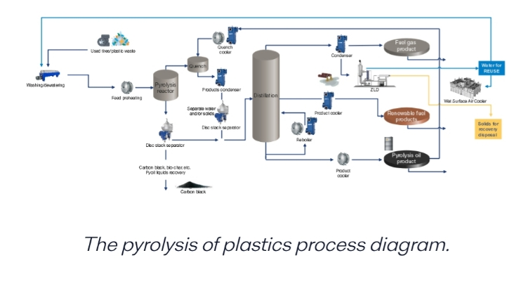
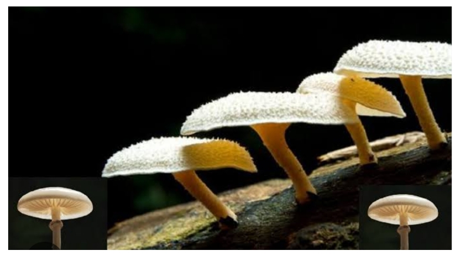
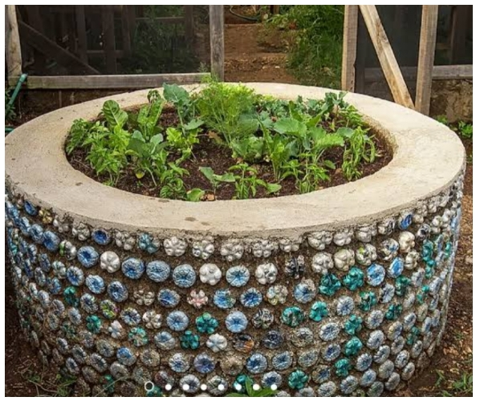

Introduction
Plastic which was once our necessity, has now turned into a nightmare. Plastic was introduced to make lives easier. But now it is creating a huge mess for both the society and the environment. Plastic is a non-biodegradable waste, which implies that it cannot be degraded by the bacteria causing soil pollution. If plastics are thrown into water, they will create a problem for the aquatic animals as well as choke the flow of water. Burning plastics leads to air pollution and several health hazards due to the toxic fumes released in the environment. Thus, plastics has been a headache for us as it can contribute to air, water and soil pollution. So, the only way is to reuse and recycle plastics to curb pollution. Here, I shall depict some innovative ways by which we can eradicate the problem of plastic pollution making it a purpose.
Pyrolysis and Gasification
Pyrolysis is basically the organic decomposition of plastics into smaller molecules by heating plastic at a high temperature. This leads to breaking of those polymer bonds. This large amount of heating causes ejection of vapours which are condensed. Pyrolysis generally produces three principal components-
Liquid oil/Bio-oil (80%) + Syn-gas (15%) + Solid Char (5%)
- The oil is used as gasoline or fuel. It also helps in production of new and strong plastics.
- Syn-gas is used to generate energy to move machines in industries.
- Solid char is used as a replacement for non-renewable resources like coal.
Another type of pyrolysis is depolymerization or purification. This process not only decomposes plastics but also separates it from various dyes, additives and contaminants. This process is generally used to recycle food grade plastic packaging.
Enzymatic Recycling
This is a treatment of plastics which is under research. But this process is a super effective process. This process involves use of several microorganisms which releases super enzymes to decompose and eat plastic!
Plastic eating fungi: Plastic eating fungi ad already been discovered. The name of the fungi is Pestalotiopsis microspora. This fungus degrades plastic even in anaerobic conditions. They are even found to degrade polyurethane! These fungus uses enzymes like laccases to break down the polymer chains. Plastic eating mushrooms like Pleurotus ostreatus and schizophyllum commune has been found in the amazon. They also use super enzymes to degrade plastic. This will help to recycle plastic in polluted environments, mainly the oceans.
Polyblend Roads
This is an excellent idea to turn waste plastic into strong, resistant, long lasting and durable roads. Plastics are also known for their water repellent properties. So, the rainwater also causes no harm to those roads.
These roads are built by the strong interaction between the heated small waste plastics and the stone aggregate. The plastic is heated at a very high temperature and allowed to melt. The molten plastic then coats the stone aggregates. Then it is mixed with bitumen to make the mixture more durable. Bitumen is used as it has a high melting point. The road will not melt in hot climate.
Plastics wastes such as carry bags, cups and food packets are easily recycled in this way. Building a road by this way also reduces cost and minimizes the problem of potholes.
3D Printing and Fast Fashion
Nowadays, fast fashion is trending among the people. The fashion involves clothes which are waterproof, shiny and glazy. To impart the shine, glaze and the waterproof properties, plastic is used. The plastic is coated over the fabric, a process known as the extrusion coating.
Extrusion coating is done by a machine. This involves two rollers rolling in anticlockwise direction and an extruder. Fabric is passed through one roller and plastic is passed through the other roller. The extruder combines the plastic and the fabric and coats it. Thus, it gives the necessary characteristics.
3D printing is also done by plastics. Plastics are melted at a high temperature which causes them to form into thin sheets. Then these sheets are pressed further to get the 3D printing. It is widely used in clothing and interior design.
Mainly plastics from PET bottles gives the best 3D printing. But other plastics can also be recycled using this method.
Ecobricks
Eco bricks is a modern concept of recycling plastics. The brick is made up of both soil and plastics. Plastics are melted at a very high temperature. Then the plastics are mixed with brick to form a mould. The mould is then dried under the sun or by using machines. The mixture of soil and plastic then form the brick.
This type of bricks is used in benches. This type of bricks is strong, durable and have a high moisture resistance. This type of bricks is preferred in rainy and waterlogged areas.
Eco bricks also refer to a special type of bottle made by using different small plastic wastes. They also help to reduce the plastic pollution. This plastic bottles also forms the foundation for construction.
A Small step before making plastics from pollution to purpose
Before recycling the plastics or making innovative solutions out of it, we all have to take a small step. When we buy something wrapped in plastic pouch, we all cut the plastic at the corner by the scissors. But this is a wrong step. When we cut by the corner, the larger part of plastic gets recycled. But the smaller part or cone of plastics cannot be used or recycled in any form.
So, from now on when you cut a plastic by its corner don’t detach it from the larger part. Ensure that it gets attached to the larger part of plastic by a smaller area. This small step can help plastics to get recycled and will reduce plastic wastes.
Conclusion
Remember that innovation is a blessing when used wisely but can be disaster when used wrongly. Plastic is also a human innovation which is misused greatly. So now it has been a curse to us. But if we try, we can turn this curse to a blessing again. The only thing that is needed is the rise for interest and desire to do something for this planet. So, let us come forward and adapt new innovations to eradicate plastic pollution, making it a purpose.